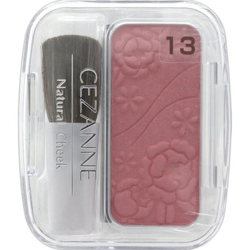

返回列表
产品名称：セザンヌ ナチュラル チークＮ 13 ローズ系ピンク

セザンヌ化粧品 セザンヌ ナチュラル チークＮ 13 ローズ系ピンク ＿
メーカー セザンヌ化粧品
JANコード 4939553040286
商品の特徴
新色美人カラー
成分・分量
タルク、ジメチコン、メチルパラベン、プロピルパラベン、トコフェロール、（＋／－）マイカ、酸化チタン、ホウケイ酸（Ca／Na）、硫酸Ba、酸化スズ、メチコン、酸化鉄、赤226、グンジョウ
用法及び用量
-